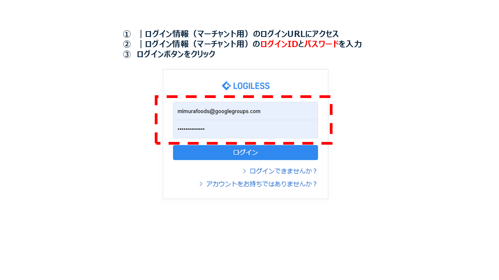
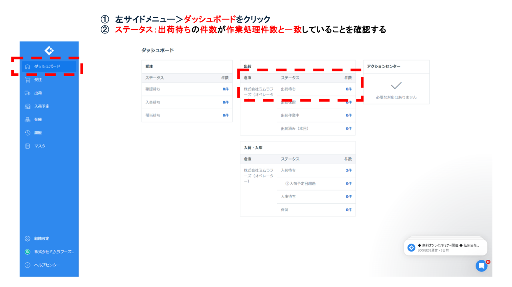

業務概要
受注処理をもとに、LOGILESS 上で出荷指示を確定する業務。 出荷担当・配送業者への連携の起点となる重要プロセス。 出荷指示は自動的に作成されます。主にここでは、出荷指示が作成されているかの確認業務となります。
ログイン情報・接続先
※ログイン情報は定期的に変更されるため、最新版はIT管理者に確認してください。
| 項目 | 内容 |
|---|---|
| システム名 | LOGILESS（在庫管理システム） |
| ログインURL | https://app.logiless.com/ |
| ユーザーID | mimurafoods@googlegroups.com |
| パスワード | Mimura20250712 |
※ログイン情報は社内利用に限り平文可。外部公開時はマスキングまたは非表示。
操作手順
1. LOGILESSにログイン
ブラウザでログイン画面にアクセスし、ユーザーID・パスワードを入力してログインする。

2. 組織を選択

上部タブの「株式会社ミムラフーヅ（マーチャント）」をクリックする。
3. 出荷待ちステータスを確認
左メインメニュー「ダッシュボード」を選び、出荷から「ステータス：出荷待ち」を確認する。件数が作業した受注処理件数と一致していることを確認する。
注意事項
- 出荷予定日は必ず当日以降の日付を指定すること。
- 納品先情報は自動入力後に必ず目視で確認すること。
- エラーが発生した場合は、原因（入力漏れ・フォーマット不一致など）を確認し、修正後に再実行する。
- 個人情報を含む画面は外部公開版では必ずマスク処理を行う。
RACI定義表
| 作業項目 | R（実行） | A（責任） | C（相談） | I（共有） |
|---|---|---|---|---|
| 出荷指示の作成 | 受注・出荷指示担当 | 商品管理責任者 | LOGILESSヘルプセンター | 出荷担当・配送業者 |